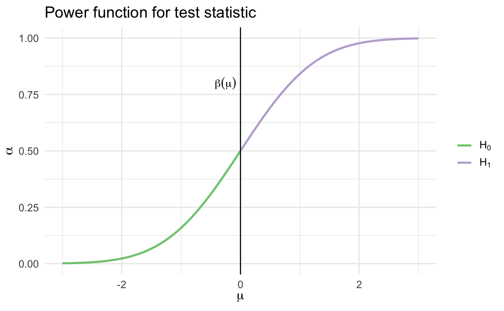
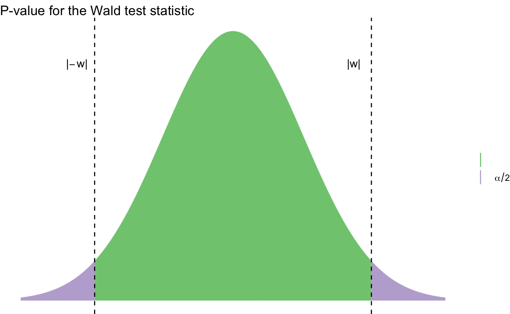

Lecture 12 Classical statistical inference
Learning objectives
- Define classical statistical inference
- Summarize core concepts of point estimates, confidence sets, and hypothesis testing
- Define parametric inference and identify use cases
- Summarize point estimates
- Define hypothesis testing and \(p\)-value
- Define the Wald test
- Summarize the \(\chi^2\) test of significance
12.1 Statistical inference
Statistical inference is the process of using data to infer the probability distribution/random variable that generated the data. Given a sample \(X_1, \ldots, X_n \sim F\), how do we infer \(F\)? Sometimes we want to infer all the features/parameters of \(F\), and sometimes we only need a subset of those features/parameters.
12.2 Parametric models
A statistical model \(\xi\) is a set of distributions (or densities or regression functions). A parametric model is a set \(\xi\) that can be parameterized by a finite number of parameters. We have seen many examples of parametric models - all the major types of random variables we’ve explored are defined in terms of a fixed number of parameters. For instance, if we assume that the data is generated by a Normal distribution, then the model is
\[\xi \equiv f(x; \mu, \sigma) = \frac{1}{\sigma \sqrt{2 \pi}} \exp \left[ -\frac{1}{2\sigma^2} (x - \mu)^2 \right], \quad \mu \in \Re, \sigma > 0\]
This is an example of a two-parameter model. The density \(f(x; \mu, \sigma)\) indicates that \(x\) is a value of the random variable \(X\), whereas \(\mu\) and \(\sigma\) are parameters that define the model.
In general, a parametric model takes the form
\[\xi \equiv f(x; \theta) : \theta \in \Theta\]
where \(\theta\) is an unknown parameter (or vector of parameters) that can only take values in the parameter space \(\Theta\). If \(\theta\) is a vector but we are only interested in one component of \(\theta\), then we call the remaining parameters nuisance parameters.
12.2.1 Examples of parametric models
Example 12.1 (One-dimensional parametric estimation) Let \(X_1, \ldots, X_n\) be independent observations drawn from a Bernoulli random variable with probability \(\pi\) of success. The problem is to estimate the parameter \(\pi\).
Example 12.2 (Two-dimensional parametric estimation) Suppose that \(X_1, \ldots, X_n \sim F\) and we assume that the PDF \(f \in \xi\) where
\[\xi \equiv f(x; \mu, \sigma) = \frac{1}{\sigma \sqrt{2 \pi}} \exp \left[ -\frac{1}{2\sigma^2} (x - \mu)^2 \right], \quad \mu \in \Re, \sigma > 0\]
In this case, there are two parameters, \(\mu\) and \(\sigma\). The goal is to estimate the parameters from the data. If we are only interested in estimating \(\mu\) (which is generally the case for inferential methods such as linear regression), then \(\mu\) is the parameter of interest and \(\sigma\) is a nuisance parameter.
12.3 Point estimates
Point estimation refers to providing a single “best guess” of some quantity of interest. This quantity of interest could be a parameter in a parametric model, a CDF \(F\), a PDF \(f\), a regression function \(r\), or a prediction for a future value \(Y\) of some random variable.
We denote a point estimate of \(\theta\) by \(\hat{\theta}\) or \(\hat{\theta}_n\). Remember that \(\theta\) is a fixed, unknown quantity. The estimate \(\hat{\theta}\) depends on the data, so \(\hat{\theta}\) is a random variable. More formally, let \(X_1, \ldots, X_n\) be \(n\) IID (independently and identically drawn) data points from some distribution \(F\). A point estimator \(\hat{\theta}_n\) of a parameter \(\theta\) is some function of \(X_1, \ldots, X_n\):
\[\hat{\theta}_n = g(X_1, \ldots, X_n)\]
12.3.1 Properties of point estimates
The bias of an estimator is defined as
\[\text{bias}(\hat{\theta}_n) = \E_\theta (\hat{\theta_n}) - \theta\]
When \(\E (\hat{\theta_n}) - \theta = 0\), we say that \(\hat{\theta_n}\) is unbiased. Many estimators in statistical inference are not unbiased – with modern approaches, this is sometimes justified. We will see examples of this in Perspectives on Computational Modeling. A more preferable requirement for an estimator is consistency: as the number of observations \(n\) increases, the estimator should converge towards the true parameter \(\theta\).
The distribution of \(\hat{\theta}_n\) is called the sampling distribution. The standard deviation of \(\hat{\theta}_n\) is called the standard error:
\[\se = \sd(\hat{\theta}_n) = \sqrt{\Var (\hat{\theta}_n)}\]
Frequently the standard error depends on the unknown \(F\). In those cases, we usually estimate it. The estimated standard error is denoted by \(\widehat{\se}\).
The quality of the point estimate is sometimes assessed by the mean squared error (MSE) defined by
\[ \begin{align} \text{MSE} &= \E_\theta [(\hat{\theta}_n - \theta)^2] \\ &= \text{bias}^2(\hat{\theta}_n) + \Var_\theta (\hat{\theta}_n) \end{align} \]
Remember that \(\E_\theta (\cdot)\) refers to expectation with respect to the distribution \(f(x_1, \ldots, x_n; \theta)\) that generated the data. \(\theta\) does not have a distribution - it is a fixed, but unknown, value.
Many estimators turn out to have, approximately, a Normal distribution – another reason why this continuous distribution is so important to statistical inference.
\[\frac{\hat{\theta}_n - \theta}{\se} \leadsto N(0,1)\]
Example 12.3 (Bernoulli distributed random variable) Let \(X_1, \ldots, X_n ~ \text{Bernoulli}(\pi)\) and let \(\hat{\pi}_n = \frac{1}{n} \sum_{i=1}^n X_i\). Then
\[\E(\hat{\pi}_n) = \frac{1}{n} \sum_{i=1}^n \E(X_i) = \pi\]
so \(\hat{\pi}_n\) is unbiased. The standard error is
\[\se = \sqrt{\Var (\hat{\pi}_n)} = \sqrt{\frac{\pi (1 - \pi)}{n}}\]
which can be estimated as
\[\widehat{\se} = \sqrt{\frac{\hat{\pi} (1 - \hat{\pi})}{n}}\]
Additionally, we have that \(\E_\pi (\hat{\pi}_n) = \pi\) so \(\text{bias} = \pi - \pi = 0\)
\[ \begin{align} \text{bias}(\hat{\pi}_n) &= \E_\pi (\hat{\pi}) - \pi \\ &= \pi - \pi \\ &= 0 \end{align} \]
and
\[\se = \sqrt{\frac{\pi (1 - \pi)}{n}} \rightarrow 0\]
as \(n\) increases. Hence, \(\hat{\pi}_n\) is a consistent estimator of \(\pi\).
12.4 Confidence sets
A \(1 - \alpha\) confidence interval for a parameter \(\theta\) is an interval \(C_n = (a,b)\) where \(a = a(X_1, \ldots, X_n)\) and \(b = b(X_1, \ldots, X_n)\) are functions of the data such that
\[\Pr_{\theta} (\theta \in C_n) \geq 1 - \alpha, \quad \forall \, \theta \in \Theta\]
In other words, \((a,b)\) traps \(\theta\) with probability \(1- \alpha\). We call \(1 - \alpha\) the coverage of the confidence interval.
12.4.1 Caution interpreting confidence intervals
\(C_n\) is random and \(\theta\) is fixed. This is a core assumption of statistical inference and especially critical for frequentist inference. Commonly people use 95% confidence intervals corresponding to \(\alpha = 0.05\). If \(\theta\) is a vector then we use a confidence set (such as a sphere or an ellipse) instead of an interval.
A confidence interval is not a probability statement about \(\theta\) since \(\theta\) is a fixed quantity, not a random variable. Either \(\theta\) is or is not in the interval with probability \(1\). A better definition is:
Definition 12.1 (Confidence interval) On day 1, you collect data and construct a 95% confidence interval for a parameter \(\theta_1\). On day 2, you collect new data and construct a 95% confidence interval for a parameter \(\theta_2\). You continue this way constructing confidence intervals for a sequence of unrelated parameters \(\theta_1, \theta_2, \ldots\). Then 95% of your intervals will trap the true parameter value.
12.4.2 Constructing confidence intervals
Because point estimators have an approximate Normal distribution, we can use the Normal distribution to construct confidence intervals relatively easily for point estimates by relying directly on the Normal distribution.
Suppose that \(\hat{\theta}_n \approx N(\theta, \widehat{\se}^2)\). Let \(\Phi\) be the CDF of a standard Normal distribution and let
\[z_{\frac{\alpha}{2}} = \Phi^{-1} \left(1 - \frac{\alpha}{2} \right)\]
That is,
\[\Pr (Z > \frac{\alpha}{2}) = \frac{\alpha}{2}\]
and
\[\Pr (-z_{\frac{\alpha}{2}} \leq Z \leq z_{\frac{\alpha}{2}}) = 1 - \alpha\]
where \(Z \sim N(0,1)\). Let
\[C_n = (\hat{\theta}_n - z_{\frac{\alpha}{2}} \widehat{\se}, \hat{\theta}_n + z_{\frac{\alpha}{2}} \widehat{\se})\]
Then
\[ \begin{align} \Pr_\theta (\theta \in C_n) &= \Pr_\theta (\hat{\theta}_n - z_{\frac{\alpha}{2}} \widehat{\se} < \theta < \hat{\theta}_n + z_{\frac{\alpha}{2}} \widehat{\se}) \\ &= \Pr_\theta (- z_{\frac{\alpha}{2}} < \frac{\hat{\theta}_n - \theta}{\widehat{\se}} < z_{\frac{\alpha}{2}}) \\ &\rightarrow \Pr ( - z_{\frac{\alpha}{2}} < Z < z_{\frac{\alpha}{2}}) \\ &= 1 - \alpha \end{align} \]
For 95% confidence intervals, \(\alpha = 0.05\) and \(z_{\frac{\alpha}{2}} = 1.96 \approx 2\) leading to the approximate 95% confidence interval \(\hat{\theta}_n \pm 2 \widehat{\se}\).
12.5 Hypothesis testing
In hypothesis testing, we start with some default theory – called a null hypothesis – and we ask if the data provide sufficient evidence to reject the theory. If not, we fail to reject the null hypothesis.
Formally, suppose we partition the parameter space \(\Theta\) into two disjoint sets \(\Theta_0\) and \(\Theta_1\) and that we wish to test
\[H_0: \theta \in \Theta_0 \quad \text{versus} \quad H_1: \theta \in \Theta_1\]
- \(H_0\) - null hypothesis
- \(H_1\) - alternative hypothesis
Let \(X\) be a random variable and let \(\chi\) be the range of \(X\). We test a hypothesis by finding an appropriate subset of outcomes \(R \subset \chi\) called the rejection region. If \(X \subset R\) we reject the null hypothesis, otherwise we do not reject the null hypothesis. Usually the rejection region \(R\) is of the form
\[R = \left\{ x: T(x) > c \right\}\]
where \(T\) is a test statistic and \(c\) is a critical value. Hypothesis testing requires us to find an appropriate test statistic \(T\) and an appropriate critical value \(c\) to test a given hypothesis. Different hypotheses require different test statistics.
12.5.1 Types of errors

Figure 12.1: Stereotypical example of hypothesis testing errors.
Hypothesis testing is not error-proof. We start from the assumption that \(H_0\) is true unless there is strong evidence to reject \(H_0\). Rejecting \(H_0\) when \(H_0\) is true is a type I error (false positive), while retaining \(H_0\) when \(H_1\) is true is called a type II error (false negative).
12.5.2 Power function
The power function of a test with rejection region \(R\) is defined by
\[\beta(\theta) = \Pr_\theta (X \in R)\]
The size of a test is defined to be
\[\alpha = \text{sup}_{\theta \in \Theta_0} \beta(\theta)\]
A test is said to have level \(\alpha\) if its size is less than or equal to \(\alpha\).
12.5.3 Sided tests
A test of the form
\[H_0: \theta = \theta_0 \quad \text{versus} \quad H_1: \theta \neq \theta_0\]
is called a two-sided test, or a simple hypothesis. A test of the form
\[H_0: \theta \leq \theta_0 \quad \text{versus} \quad H_1: \theta > \theta_0\]
or
\[H_0: \theta \geq \theta_0 \quad \text{versus} \quad H_1: \theta < \theta_0\]
is called a one-sided test, or a composite hypothesis.
12.5.4 Example hypothesis test
Let \(X_1, \ldots, X_n \sim N(\mu, \sigma^2)\) where \(\sigma\) is known. We want to test \(H_0: \mu \leq 0\) versus \(H_1: \mu > 0\). Hence, \(\Theta_0 = (-\infty, 0]\) and \(\Theta_1 = (0, \infty]\). Consider the test
\[\text{reject } H_0 \text{ if } T>c\]
where \(T = \bar{X}\). The rejection region is
\[R = \left\{(x_1, \ldots, x_n): T(x_1, \ldots, x_n) > c \right\}\]
Let \(Z\) denote the standard Normal random variable. The power function is
\[ \begin{align} \beta(\mu) &= \Pr_\mu (\bar{X} > c) \\ &= \Pr_\mu \left(\frac{\sqrt{n} (\bar{X} - \mu)}{\sigma} > \frac{\sqrt{n} (c - \mu)}{\sigma} \right) \\ &= \Pr_\mu \left(Z > \frac{\sqrt{n} (c - \mu)}{\sigma} \right) \\ &= 1 - \Phi \left( \frac{\sqrt{n} (c - \mu)}{\sigma} \right) \end{align} \]
This function is increasing in \(\mu\):

Hence
\[\alpha = \text{sup}_{\mu \leq 0} \beta(\mu) = \beta(0) = 1 - \Phi \left( \frac{\sqrt{n} (c)}{\sigma} \right)\]
For a size \(\alpha\) test, we set this equal to \(\alpha\) and solve for \(c\) to get
\[c = \frac{\sigma \Phi^{-1} (1 - \alpha)}{\sqrt{n}}\]
We reject \(H_0\) when
\[\bar{X} > \frac{\sigma \Phi^{-1} (1 - \alpha)}{\sqrt{n}}\]
Equivalently, we reject when
\[\frac{\sqrt{n}(\bar{X} - 0)}{\sigma} > z_\alpha\]
where \(z_\alpha = \Phi^{-1} (1 - \alpha)\).
Ideally we find the test with the highest power under \(H_1\) among all size \(\alpha\) tests. In practice, we use many of the same commonly used tests.
12.5.5 Wald test
Let \(\theta\) be a scalar parameter, let \(\hat{\theta}\) be an estimate of \(\theta\), and let \(\widehat{\se}\) be the estimated standard error of \(\hat{\theta}\). Consider testing
\[H_0: \theta = \theta_0 \quad \text{versus} \quad H_1: \theta \neq \theta_0\]
Assume that \(\hat{\theta}\) is asymptotically Normal:
\[\frac{\hat{\theta} - \theta_0}{\widehat{\se}} \leadsto N(0,1)\]
The size \(\alpha\) Wald test is: reject \(H_0\) when \(|W| > z_{\alpha / 2}\) where
\[W = \frac{\hat{\theta} - \theta_0}{\widehat{\se}}\]
This test statistic follows the Normal distribution.
12.5.5.1 Power of the Wald test
Suppose the true value of \(\theta\) is \(\theta_* \neq \theta_0\). The power \(\beta(\theta_*)\) – the probability of correctly rejecting the null hypothesis – is given (approximately) by
\[1 - \Phi \left( \frac{\hat{\theta} - \theta_0}{\widehat{\se}} + z_{\alpha/2} \right) + \Phi \left( \frac{\hat{\theta} - \theta_0}{\widehat{\se}} - z_{\alpha/2} \right)\]
Remember this is a two-tailed test. Essentially we are collecting the probability mass in the center of the standard normal distribution and subtracting that from 1, to get the area in the tails of the distribution. Hence, two-tailed test.
Recall that \(\widehat{\se}\) tends to 0 as the sample size increases. So we can note that:
- The power is large if \(\theta_*\) is far from \(\theta_0\)
- The power is large if the sample size is large
Example 12.4 (Comparing two means) Let \(X_1, \ldots, X_m\) and \(Y_1, \ldots, Y_n\) be two independent samples from populations with means \(\mu_1, \mu_2\) respectively. Let’s test the null hypothesis that \(\mu_1 = \mu_2\). Write this as
\[H_0: \delta = 0 \quad \text{versus} \quad H_1: \delta \neq 0\]
where \(\delta = \mu_1 - \mu_2\). The estimate of \(\delta\) is \(\hat{\delta} = \bar{X} - \bar{Y}\) with estimated standard error
\[\widehat{\se} = \sqrt{\frac{s_1^2}{m} + \frac{s_2^2}{n}}\]
where \(s_1^2\) and \(s_2^2\) are the sample variances. The size \(\alpha\) Wald test rejects \(H_0\) when \(|W| > z_{\alpha / 2}\) where
\[W = \frac{\hat{\delta} - 0}{\widehat{\se}} = \frac{\bar{X} - \bar{Y}}{\sqrt{\frac{s_1^2}{m} + \frac{s_2^2}{n}}}\]
12.5.6 Wald or \(t\)-test?
To test \(H_0: \mu = \mu_0\) where \(\mu = \E[X_i]\) is the mean, we can use the Wald test. When the data are assumed to be Normal and the sample size is small, it is common to use the \(t\)-test based on the Student’s \(t\) distribution.
Definition 12.2 (Degrees of freedom) Generally defined as the number of observations minus the number of estimated parameters.
12.5.7 Relationship to confidence intervals
There is a relationship between the Wald test and the \(1 - \alpha\) asymptotic confidence interval \(\hat{\theta} \pm \widehat{\se} z_{\alpha/2}\). The size \(\alpha\) Wald test rejects \(H_0: \theta = \theta_0 \quad \text{versus} \quad \theta \neq \theta_0\) if and only if \(\theta_0 \notin C\) where
\[C = (\hat{\theta} - \widehat{\se}z_{\alpha / 2}, \hat{\theta} + \widehat{\se}z_{\alpha / 2})\]
Thus, testing the hypothesis is equivalent to checking whether the null value is in the confidence interval.
12.5.8 Statistical vs. scientific significance

Figure 12.2: Difference between statistical and scientific significance. Courtesy of Carl Sagan.
Rejecting \(H_0\) indicates the result is statistically significant. That is, we have strong evidence to reject \(H_0\). The result or effect size can still be small if our test is powerful. In that situation, we have statistical significance but not necessarily scientific/substantive/practical significance. You should always be concerned with both of these types of significance. Statistical significance alone is not necessarily a useful or informative finding.
12.6 \(p\)-values
We could use a more fine-grained measure of the evidence against the null hypothesis. Generally, if the test rejects at level \(\alpha\) it will also reject at level \(\alpha' > \alpha\). Hence, there is the smallest \(\alpha\) at which the test rejects and we call this number the \(p\)-value. Informally, the smaller the \(p\)-value, the stronger the evidence against \(H_0\). Remember that this \(\alpha\) will be a function of the power of the test, so both the magnitude of the difference between \(\theta_*\) and \(\theta_0\) and the sample size will influence this value.
12.6.1 Interpreting \(p\)-values
| \(p\)-value | evidence |
|---|---|
| \(< .01\) | very strong evidence against \(H_0\) |
| \(.01 - .05\) | strong evidence against \(H_0\) |
| \(.05 - .10\) | weak evidence against \(H_0\) |
| \(> .1\) | little or no evidence against \(H_0\) |
- These values are informal standards. There is no rhyme or reason they have to be so
- A large \(p\)-value is not strong evidence in favor of \(H_0\)
- \(H_0\) could be true
- \(H_0\) is false but the test has low power
- \(p\)-value is not \(\Pr (H_0 | \text{Data})\). The \(p\)-value is not the probability that the null hypothesis is true
12.6.2 Calculating \(p\)-values
Suppose that the size \(\alpha\) test is of the form
\[\text{reject } H_0 \text{ if and only if } T(X_n) \geq c_\alpha\]
Then,
\[\text{p-value} = \text{sup}_{\theta \in \Theta_0} \Pr_\theta (T(X^n) \geq T(x^n))\]
where \(x^n\) is the observed value of \(X^n\). If \(\Theta_0 = \{ \theta_0 \}\) then
\[\text{p-value} = \Pr_{\theta_0} (T(X^n) \geq T(x^n))\]
Informally, the \(p\)-value is the probability under \(H_0\) of observing a value of the test statistic the same as or more extreme then what was actually observed.
12.6.2.1 \(p\)-value for Wald test
Let
\[w = \frac{\hat{\theta} - \theta_0}{\widehat{\se}}\]
denote the observed value of the Wald statistic \(W\). The \(p\)-value is given by
\[\text{p-value} = \Pr_{\theta_0} (|W| > |w|) \approx \Pr (|Z| > |w| = 2 \Phi(-|w|)\]
where \(Z \sim N(0,1)\).

Example 12.5 (Cholesterol data) Consider a set of 371 individuals in a health study examining cholesterol levels (in mg/dl). 320 individuals have narrowing of the arteries, while 51 patients have no evidence of heart disease. Is the mean cholesterol different in the two groups?
Let the estimated mean cholesterol levels for the first group be \(\bar{X} = 216.2\) and for the second group \(\bar{Y} = 195.3\). Let the estimated standard error for each group be \(\widehat{\se}(\hat{\mu}_1) = 5.0\) and \(\widehat{\se}(\hat{\mu}_2) = 2.4\). The Wald test statistic is
\[W = \frac{\hat{\delta} - 0}{\widehat{\se}} = \frac{\bar{X} - \bar{Y}}{\sqrt{\widehat{\se}_1^2 + \widehat{\se}_2^2}} = \frac{216.2 - 195.3}{\sqrt{5^2 + 2.4^2}} = 3.78\]
To compute the \(p\)-value, let \(Z \sim N(0,1)\) denote a standard Normal random variable. Then
\[\text{p-value} = \Pr (|Z| > 3.78) = 2 \Pr(Z < -3.78) = 0.0002\]
which is very strong evidence against the null hypothesis.
12.6.3 Pearson’s \(\chi^2\) test for multinomial data
Pearson’s \(\chi^2\) test is used for multinomial data. Recall that if \(X = (X_1, \ldots, X_k)\) has a multinomial \((n,p)\) distribution, then the MLE of \(p\) is \(\hat{p} = (\hat{p}_1, \ldots, \hat{p}_k) = (x_1 / n, \ldots, x_k / n)\).
Let \(p_0 = (p_{01}, \ldots, p_{0k})\) be some fixed vector and suppose we want to test
\[H_0: p = p_0 \quad \text{versus} \quad H_1: p \neq p_0\]
Pearson’s \(\chi^2\) statistic is
\[T = \sum_{j=1}^k \frac{(X_j - np_{0j})^2}{np_{0j}} = \sum_{j=1}^k \frac{(X_j - \E[X_j])^2}{\E[X_j]}\]
where \(\E[X_j] = \E[X_j] = np_{0j}\) is the expected value under \(H_0\).
12.6.3.1 Example: Attitudes towards abortion
- \(H_A\) - In a comparison of individuals, liberals are more likely to favor allowing a woman to obtain an abortion for any reason than conservatives
- \(H_0\) - There is no difference in support between liberals and conservatives for allowing a woman to obtain an abortion for any reason. Any difference is the result of random sampling error.
Say the null hypothesis is correct - there are no differences between ideological groups and attitudes towards abortion. What would the table look like?22
| Right to Abortion | Liberal | Moderate | Conservative | Total |
|---|---|---|---|---|
| Yes | 40.8% | 40.8% | 40.8% | 40.8% |
| (206.45) | (289.68) | (271.32) | (768) | |
| No | 59.2% | 59.2% | 59.2% | 59.2% |
| (299.55) | (420.32) | (393.68) | (1113) | |
| Total | 26.9% | 37.7% | 35.4% | 100% |
| (506) | (710) | (665) | (1881) |
In truth, what does our table actually look like?
| Right to Abortion | Liberal | Moderate | Conservative | Total |
|---|---|---|---|---|
| Yes | 62.6% | 36.6% | 28.7% | 40.8% |
| (317) | (260) | (191) | (768) | |
| No | 37.4% | 63.4% | 71.28% | 59.2% |
| (189) | (450) | (474) | (1113) | |
| Total | 26.9% | 37.7% | 35.4% | 100% |
| (506) | (710) | (665) | (1881) |
How can we test if these differences are statistically significant? That is, how do we test to see if we can reject the null hypothesis?
| Right to Abortion | Liberal | Moderate | Conservative | |
|---|---|---|---|---|
| Yes | Observed Frequency (\(X_j\)) | 317.0 | 260.0 | 191.0 |
| Expected Frequency (\(\E[X_j]\)) | 206.6 | 289.9 | 271.5 | |
| \(X_j - \E[X_j]\) | 110.4 | -29.9 | -80.5 | |
| \((X_j - \E[X_j])^2\) | 12188.9 | 893.3 | 6482.7 | |
| \(\frac{(X_j - \E[X_j])^2}{\E[X_j]}\) | 59.0 | 4.1 | 23.9 | |
| No | Observed Frequency (\(X_j\)) | 189.0 | 450.0 | 474.0 |
| Expected Frequency (\(\E[X_j]\)) | 299.4 | 420.1 | 393.5 | |
| \(X_j - \E[X_j]\) | -110.4 | 29.9 | 80.5 | |
| \((X_j - \E[X_j])^2\) | 12188.9 | 893.3 | 6482.7 | |
| \(\frac{(X_j - \E[X_j])^2}{\E[X_j]}\) | 40.7 | 2.1 | 16.5 |
- Calculating test statistic
- \(\chi^2=\sum{\frac{(X_j - \E[X_j])^2}{\E[X_j]}}=145.27\)
- \(\text{Degrees of freedom} = (\text{number of rows}-1)(\text{number of columns}-1)=2\)
- Calculating \(p\)-value
- \(\text{p-value} = \Pr (\chi_2^2 > 145.27) = 0\)
- The probability that the null hypothesis is true and the observed frequencies are the result of random sampling error is less than 1 in a quintillion. Extremely extremely unlikely the null hypothesis is true.
References
Based on data from the 2008 American National Elections Study.↩︎